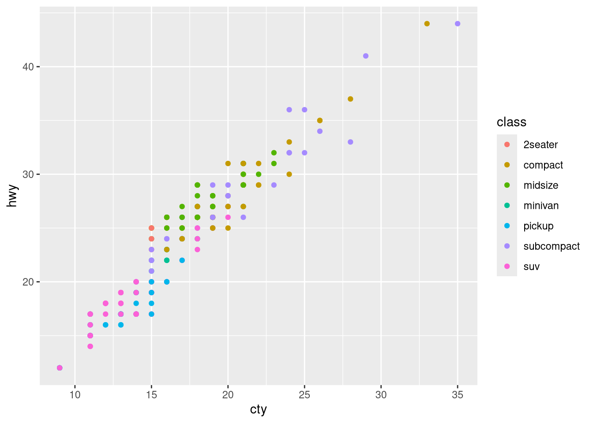
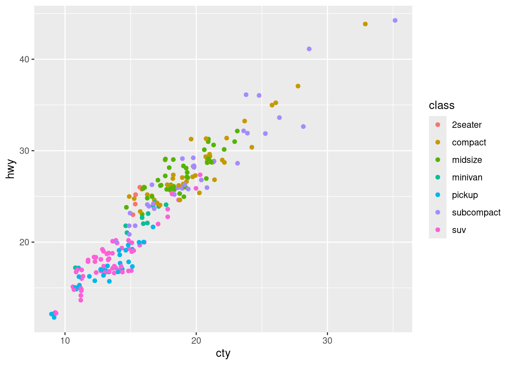
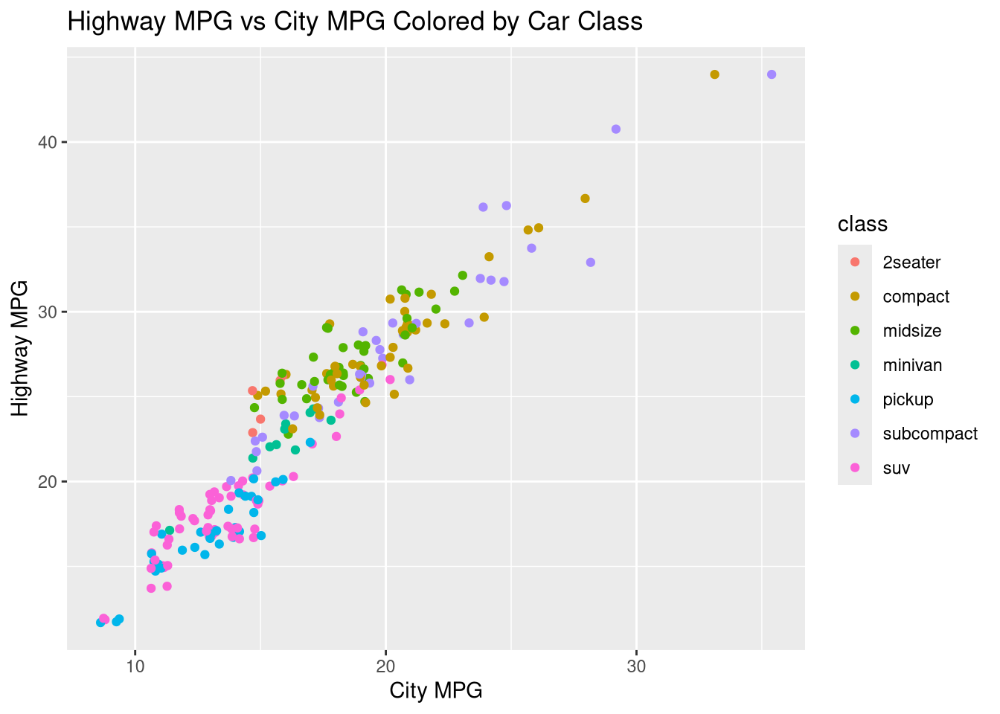
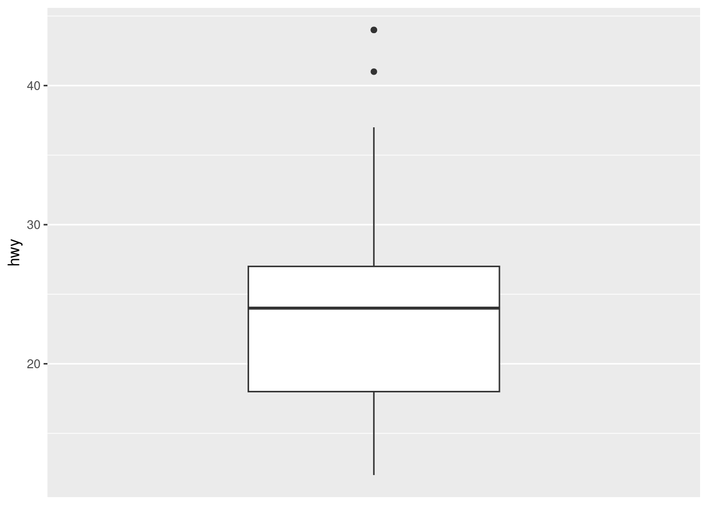
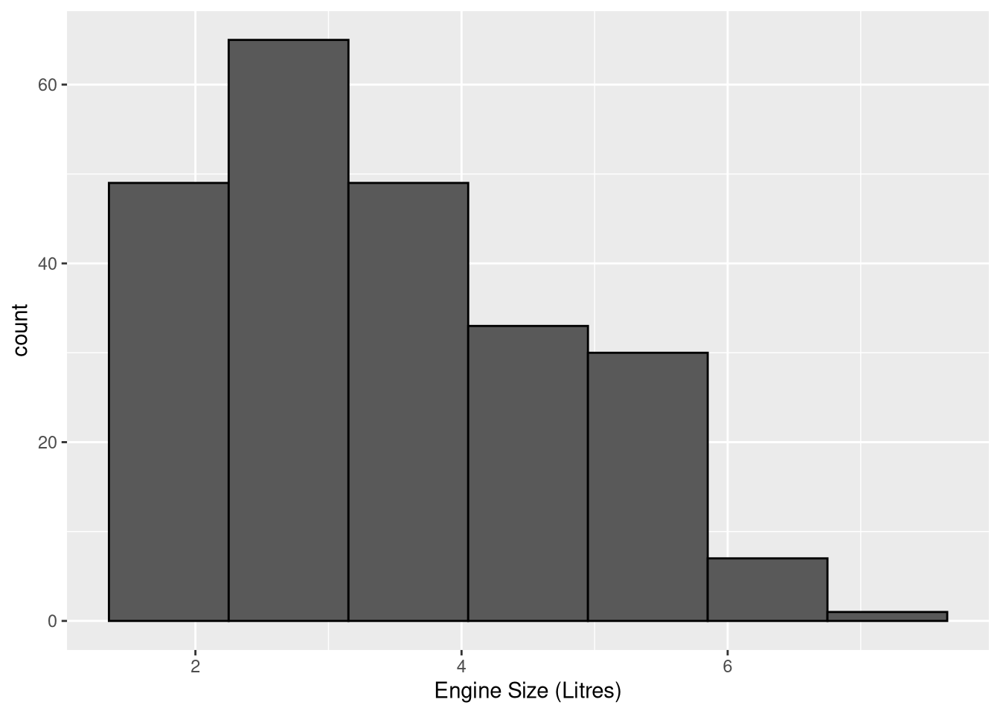
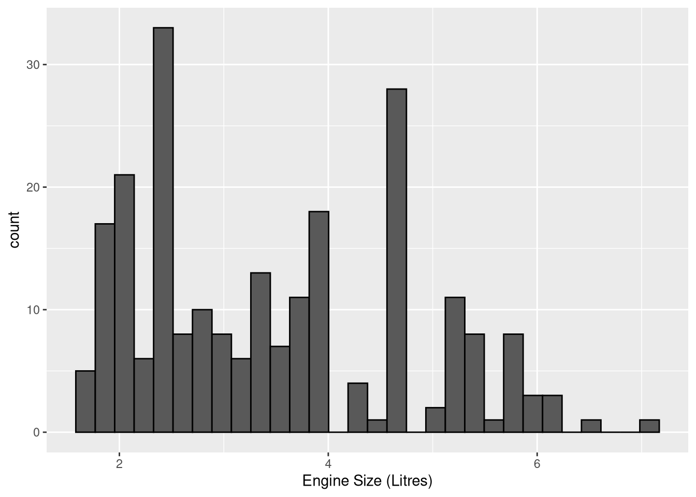
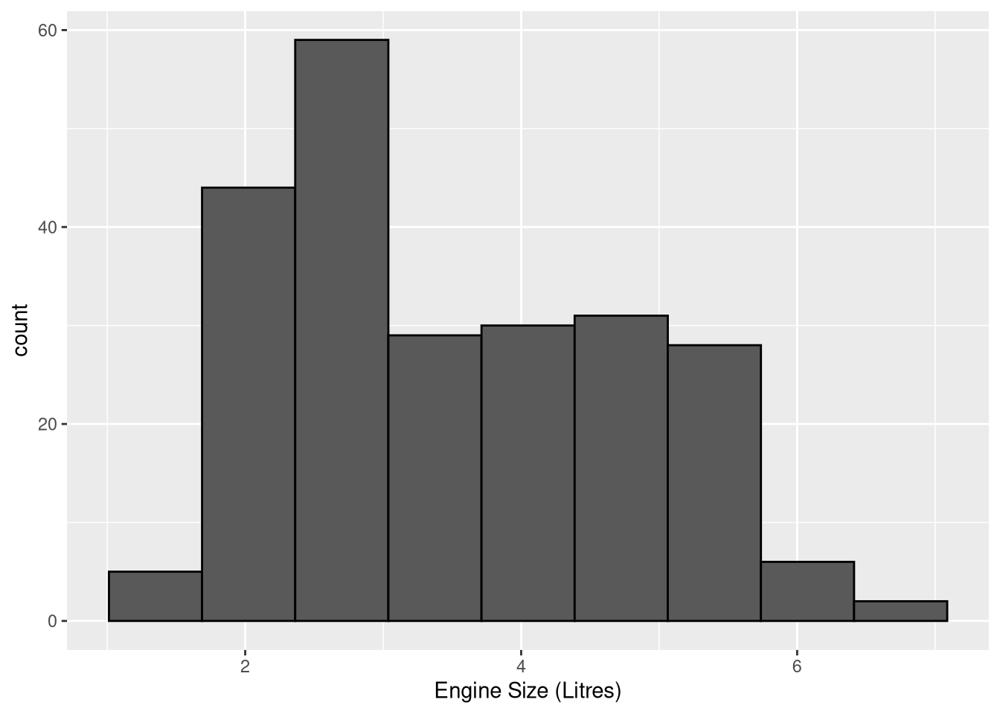
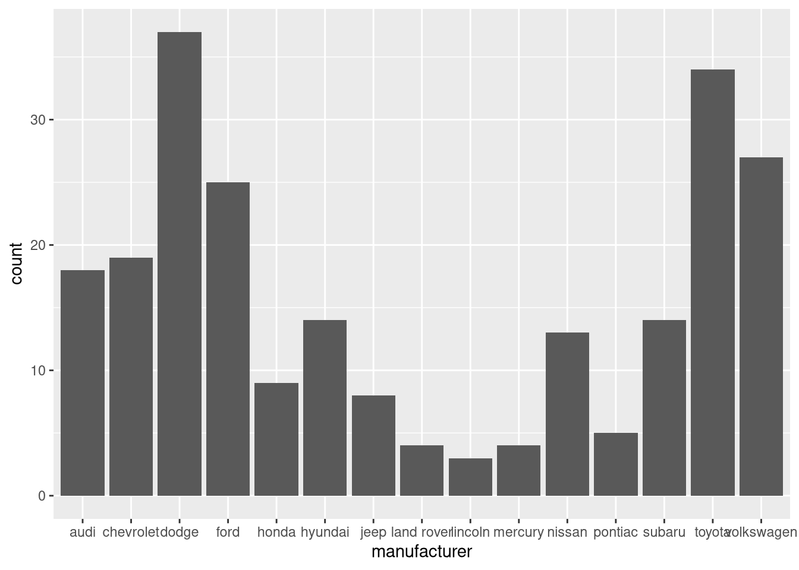
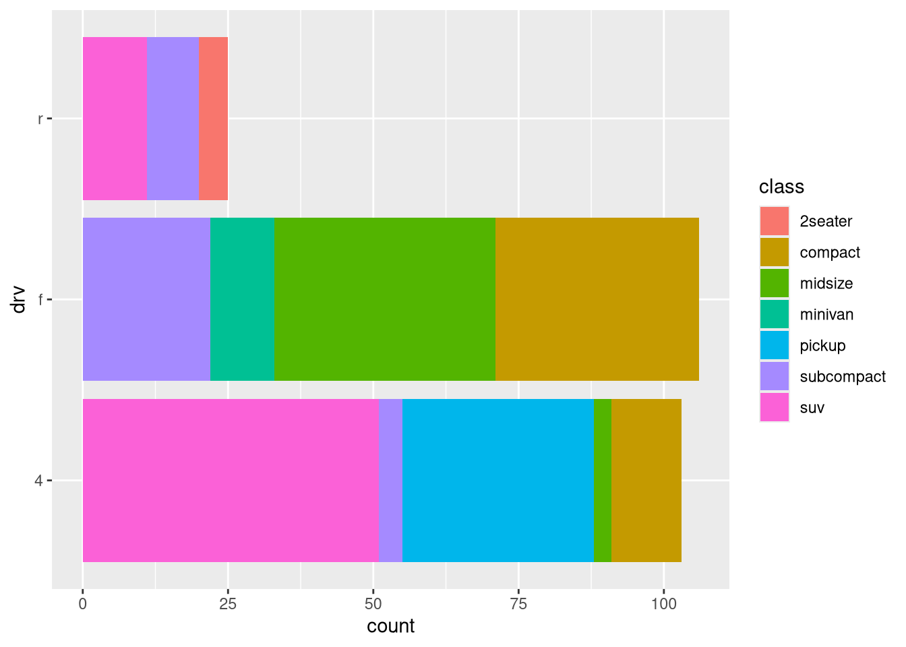

install.packages("tidyverse")
library(tidyverse)Practice Session: Coding, Stats, and R Basics
0. Installing and Loading R Packages
1. Basics
In this section, you will learn the basics of R.
To follow along, you should type the code that appears in each box to ensure you are getting the intended result.
- When you encounter a “Challenge”, this is a task you should solve with your group using critical thinking.
- In this first part, whenever you see a box of code, you should also type out that code and run it to verify the output. We all need to learn the basics.
- When we get to part 2 (Data Frames), it is okay to focus more on the challenges and read code and the output. However, you should still type out any code that feels “brand new.” Physically typing out the code helps more than you might think.
Don’t be afraid to ask for help at any point during the datathon! Raise your hand and a volunteer will come help right away.
1.1 R is a calculator
What is \(2+2\)? R can do this for us in three different ways.
Method 1
Input 2+2 into the console and press ENTER to obtain 4.
2+2[1] 4Method 2
Try doing it from the script by following these steps:
- Input
2+2into the script file. - Pressing
CTRL+ENTER. (CMD+ENTERon a mac.)
Now, look at the console and you will notice that the code “gets run” in the console.
Method 3
- Go back to the line for
2+2in the script file, and click theRUNbutton.
Using Comments
Lines that start with a # are called comments and is not run. They are useful for making notes to yourself or to explain complex code.
Type each of these two lines into the script file and run them one-by-one.
# Multiply 2 by 3 and then add 7
2*3 + 7[1] 13You do not need to type out the comments in this next example, but you should read them and run the code.
# Calculate the average of four numbers.
# First, we sum the numbers using parentheses, then divide by the count.
(2 + 7 + 3 + 2) / 4[1] 3.5In what follows, you do not necessarily need to type out all of the comments. However, it is considered “good coding practice” to add comments to your code. (Can you think of a couple of reasons as to why?)
1.2 Workflow Tips
- Think of the
scriptas a whiteboard. You can adjust it as you need to.
- The
consolecan be used to run quick commands directly
What if the 7 is instead a 9?
Instead of typing out this code, go back and adjust (2 + 7 + 3 + 2) / 4) in the script. Then use CTRL + ENTER to run it.
(2 + 9 + 3 + 2) / 4[1] 4You can also recycle commands with the console:
- Click anywhere in the console, and press the
up arrowon the keyboard. Keep pressing it and cycle through to see the commands you have ran. - Click on the
"History"tab in the upper right as another way to see previous commands. (Make sure to click back to"Environment"…we will be using it soon) - You can highlight multiple lines of code and run them at once. Right now, highlight all of your code and run it. Your resulting console should give output like this:
2+2[1] 4# Multiply 2 by 3 and then add 7
2*3 + 7[1] 13# Calculate the average of four numbers.
# First, we sum the numbers using parentheses, then divide by the count.
(2 + 9 + 3 + 2) / 4[1] 4White Space
- White space (empty lines) do not affect code. It is encouraged to make code more readable.
- Instead a script with no spaces, something like this is preferable:
2+2
# Multiply 2 by 3 and then add 7
2*3 + 7
# Calculate the average of four numbers.
# First, we sum the numbers using parentheses, then divide by the count.
(2 + 9 + 3 + 2) / 41.2 Using Functions
R includes functions for other types of math
# using a function: rounding numbers
round(3.14)[1] 3An argument is an input to a function. Functions can take in many arguments:
# using a function with more arguments
round(3.14, digits = 1)[1] 3.1Note on R Syntax
Here are three ways to do the same thing. Can you see why this happens?
# Method 1
round(3.14, digits = 1)[1] 3.1# Method 2
round(3.14,
digits = 1)[1] 3.1# Method 3
round(3.14,
digits = 1
)[1] 3.1R reads from left to right, line by line. If it does not see the end of a statement, then it will keep going onto the next line.
Challenge 1
What do you think this code will produce? Predict the answer yourself before running it.
100 +
30 +
7Syntax Warning
# Correct syntax
round(3.14,
digits = 1)
# Incorrect syntax: This will cause an error because the statement is not complete without ")"
round(3.14,
digits = 1
# Incorrect syntax: This will cause an error because R is case sensitive.
Round(3.14,
digits = 1)1.3 Assigning Objects
# assigning value to an object
weight_kg <- 55Now, look in the upper right and you will see weight_kg in the environment. This means we can use it in various ways:
# recall object
weight_kg[1] 55# multiply an object (convert kg to lb)
2.2 * weight_kg[1] 121# assign converted weight in lbs
weight_lb <- 2.2 * weight_kg
# reassign new value to an object
weight_kg <- 100After running the last code, notice that weight_kg changed in the environment panel.
CAUTION:
Reminder: R is case sensitive. So it will treat weight_kg, Weight_kg, and WEIGHT_kg differently. (Try running the command Weight_kg. What error does it produce?)
1.4 Vectors
In R, a vector can be thought of as a list (usually of numbers).
# assign vector
ages <- c(16, 18, 20, 22, 24)
# recall vector
ages[1] 16 18 20 22 24All sorts of functions can be applied to vectors:
# how many things are in object?
length(ages)[1] 5# average the ages to obtain the mean: (16 + 18 + 20 + 22 + 24) / 5
mean(ages) # this is faster than typing out (16 + 18 + 20 + 22 + 24) / 5[1] 20# smallest and largest ages
range(ages)[1] 16 24# what are the ages if everyone becomes 5 years older?
ages + 5[1] 21 23 25 27 29# what are the ages if everyone is two times as old as they are now?
ages * 2[1] 32 36 40 44 48Vectors of Words
Words need to be put in quotation marks.
# vector of foods
foods <- c("pizza", "spaghetti", "steak")
foods[1] "pizza" "spaghetti" "steak" # It doesn't make sense to take an average of the foods.
# NA means "Not Available"
mean(foods)[1] NA2. Data Frames and Statistics Basics
A data frame is like a spreadsheet. They can
- be created from scratch like we did with
ages(using thedata.frame(...)command) - imported from a package (or, exist in base
R) - be imported (excel spreadsheets can be imported!)

Libraries
libraries are separate functions functions someone else wrote that are not built into R. They need to be installed ahead of time, but we have done that for you.
Now, load the package ggplot2. This code needs to be run once per R session.
# Load package. Gives access to plotting tools and loads "mpg".
library(ggplot2)
# Insert mpg into environment
data(mpg) 2.1 Data Frame Functions (mpg)
In mpg,
- each row corresponds to an observation (in this case, a car)
- each column corresponds to a variable car characteristic
- each cell has a value
Here are some things you can use to understand a data frame better:
# get the variable names
names(mpg) [1] "manufacturer" "model" "displ" "year" "cyl"
[6] "trans" "drv" "cty" "hwy" "fl"
[11] "class" # get the number of observations and variables. dim means dimension
dim(mpg)[1] 234 11# display the first 10 observations of the dataframe
head(mpg, 10)# A tibble: 10 × 11
manufacturer model displ year cyl trans drv cty hwy fl class
<chr> <chr> <dbl> <int> <int> <chr> <chr> <int> <int> <chr> <chr>
1 audi a4 1.8 1999 4 auto… f 18 29 p comp…
2 audi a4 1.8 1999 4 manu… f 21 29 p comp…
3 audi a4 2 2008 4 manu… f 20 31 p comp…
4 audi a4 2 2008 4 auto… f 21 30 p comp…
5 audi a4 2.8 1999 6 auto… f 16 26 p comp…
6 audi a4 2.8 1999 6 manu… f 18 26 p comp…
7 audi a4 3.1 2008 6 auto… f 18 27 p comp…
8 audi a4 quattro 1.8 1999 4 manu… 4 18 26 p comp…
9 audi a4 quattro 1.8 1999 4 auto… 4 16 25 p comp…
10 audi a4 quattro 2 2008 4 manu… 4 20 28 p comp…# access a certain variable with a "$"
mpg$hwy # highway mpg [1] 29 29 31 30 26 26 27 26 25 28 27 25 25 25 25 24 25 23 20 15 20 17 17 26 23
[26] 26 25 24 19 14 15 17 27 30 26 29 26 24 24 22 22 24 24 17 22 21 23 23 19 18
[51] 17 17 19 19 12 17 15 17 17 12 17 16 18 15 16 12 17 17 16 12 15 16 17 15 17
[76] 17 18 17 19 17 19 19 17 17 17 16 16 17 15 17 26 25 26 24 21 22 23 22 20 33
[101] 32 32 29 32 34 36 36 29 26 27 30 31 26 26 28 26 29 28 27 24 24 24 22 19 20
[126] 17 12 19 18 14 15 18 18 15 17 16 18 17 19 19 17 29 27 31 32 27 26 26 25 25
[151] 17 17 20 18 26 26 27 28 25 25 24 27 25 26 23 26 26 26 26 25 27 25 27 20 20
[176] 19 17 20 17 29 27 31 31 26 26 28 27 29 31 31 26 26 27 30 33 35 37 35 15 18
[201] 20 20 22 17 19 18 20 29 26 29 29 24 44 29 26 29 29 29 29 23 24 44 41 29 26
[226] 28 29 29 29 28 29 26 26 26# average highway mpg of cars in the dataset
mean(mpg$hwy) [1] 23.44017# view the data frame like an excel spreadsheet
View(mpg)You can also use the environment instead of typing View(...). Do this now by clicking on mpg in the environment tab.
Challenge 2:
Find the average city miles per gallon for a car in the dataset and compare it to the average highway miles per gallon. Does the result surprise you?
2.2 Data Frame Filtering with subset (mpg)
# Filtering cars with highway mileage greater than 30
subset(mpg, hwy > 30)
# Filtering cars that are rear wheel drive
subset(mpg, drv == "r")# Average hwy mpg of minivans
minivans <- subset(mpg, class == "minivan")
mean(minivans$hwy)[1] 22.363642.3 Statistics Primer
Variable Types
There are two main types of variables
- Numerical (or quantitative): Typically numbers; makes sense to add and average them.
- Categorical (or factor, or qualitative): Typically things that have names; does not make sense to add or average them.
# engine size (displacement) is a numeric variable.
mean(mpg$displ) # average of engine sizes[1] 3.471795sum(mpg$displ) # sum of engine sizes[1] 812.4# class, or "type" of car is a categorical variable
mean(mpg$class) # this will return an error[1] NAunique(mpg$class) # gives the unique elements of car type ("levels" or "categories")[1] "compact" "midsize" "suv" "2seater" "minivan"
[6] "pickup" "subcompact"Challenge 3:
- Give another numerical variable in
mpg, and report its average. - Give another categorical variable in
mpg, and report its possible categories.
TECHNICAL NOTE 1:
(Feel free to run the code in the helper script and skip this part)
When doing statistics, categorical variables should be stored as factor variables, which tells R that the words are more than just words and will be used for statistics. The Levels are the possible categories.
# foods, as a character
foods[1] "pizza" "spaghetti" "steak" # foods, as a factor
factor(foods)[1] pizza spaghetti steak
Levels: pizza spaghetti steakCategorical variables are usually already factor variables in R, but depending on how the data is imported, they may need to be converted. We need to do this with mpg.
# Approach 1: tedious but straightforward
# repeat this for each categorical variable
mpg$manufacturer <- as.factor(mpg$manufacturer)
# ...
# Approach 2: does it automatically, but the code is very complicated.
# You can find this code in the helper script so you do not have to type it by hand.
mpg[sapply(mpg, is.character)] <- lapply(mpg[sapply(mpg, is.character)],
as.factor)3. Plots and Summary Statistics
3.1 Basic Plots
Scatterplots
Scatterplots illustrate a relationship between two numeric variables.
# Most common syntax
ggplot(mpg) +
geom_point(aes(x = cty, y = hwy))# Alternative syntax, can be too long (examples later)
ggplot(mpg) + geom_point(aes(x=cty, y = hwy))
# Syntax to illustrate each part
ggplot(mpg) + # We want to plot "mpg"
geom_point( # Make a "point" plot (scatterplot)
aes(x=cty, y = hwy) # Aesthetically, cty is on x-axis, hwy is on y-axis
)aes(...) tells the plot what aesthetics you want it to have. Some examples of things to specify:
x: variable to put on \(x\)-axisy: variable to put on \(y\)-axiscol: if you want to add color according to a certain variablesize: if you want to change the
# Colored by car type
ggplot(mpg) +
geom_point(aes(x = cty, y = hwy, col = class))
# Adding jitter is useful when data might overlap.
ggplot(mpg) +
geom_jitter(aes(x = cty, y = hwy, col = class))
# You can also add labels
ggplot(mpg) +
geom_jitter(aes(x = cty, y = hwy, col = class)) +
xlab("City MPG") +
ylab("Highway MPG") +
ggtitle("Highway MPG vs City MPG Colored by Car Class")
CAUTION:
Use geom_point unless the data is overlapping (common when the numeric values are forced to be whole numbers). Only use jitter when needed (otherwise the data is slightly misrepresented).
Challenge 4:
Answer a couple of questions based on the plot just created.
- What pattern do you notice between city and highway MPG? In particular, suppose that you know a car has a relatively high city MPG. What is likely about its highway MPG?
- What class of cars tend to have the lowest MPG (in general)?
- What class of cars tend to have the highest MPG (in general)?
3.2 Five Number Summaries
A five number summary (and mean) helps summarize numeric variables. It is best motivated by looking at the data a certain way. Let’s represent each mpg as a point on a plot.
summary(mpg$hwy) Min. 1st Qu. Median Mean 3rd Qu. Max.
12.00 18.00 24.00 23.44 27.00 44.00 - The minimum (
Min.) highway mpg is 12. This represents the lowest data point in the dataset. - The maximum (
Max.) highway mpg is 44. This is the highest value observed in the dataset. - The mean (
Mean) highway mpg is 23.44. This is indicated by the arrow on the plot and can be thought of as the center of balance.- If the red arrow was moved to the left, then the right side would tip over. If it was moved to the right, then the left side would tip over.
- The median (
Median, 24), first quartile (1st Qu., 18) third quartile (3rd Qu., 27) divide the data into quarters (or, fourths).- The circles are the smallest.
- The triangles are the next smallest.
- The squares are the next.
- The plus’s are next (so, they are the largest quarter of the data!)
Another way to think about it:
- 25% of the data is at or below
1st Qu. - 50% of the data is at or below
Median(so, half of the data is at or below the median, and the other half is above.) - 75% of the data is at or below
3rd Qu.
(Note: the five number summary is Min, 1st Qu., Median, 3rd Qu., and Max. The mean is not considered as part of the “five number summary”.)
Boxplot
The five number summary is also expressed as a boxplot:
# Single Boxplot
ggplot(mpg) +
geom_boxplot(aes(y = hwy)) + # boxplot with y axis as highway mpg
scale_x_discrete() # optional, but makes it look better
Look at the \(y\)-axis (hwy) and note that it matches the five number summary.
The dots represent outliers and are extreme values.
Boxplot separated by categorical variable
# Separate hwy by vehicle class
ggplot(mpg) +
geom_boxplot(aes(y = hwy, x = class)) # Add color (fill in the boxplot)
ggplot(mpg) +
geom_boxplot(aes(y = hwy, x = class, fill = class)) 3.3 Summarizing an entire dataset
summary(mpg) gives some summary statistics for each column of the data frame mpg.
- Numeric variables: five number summary and mean
- Categorical variables: reports the count or frequency of occurrences of each type
# Basic summary of each column
summary(mpg) manufacturer model displ year
dodge :37 caravan 2wd : 11 Min. :1.600 Min. :1999
toyota :34 ram 1500 pickup 4wd: 10 1st Qu.:2.400 1st Qu.:1999
volkswagen:27 civic : 9 Median :3.300 Median :2004
ford :25 dakota pickup 4wd : 9 Mean :3.472 Mean :2004
chevrolet :19 jetta : 9 3rd Qu.:4.600 3rd Qu.:2008
audi :18 mustang : 9 Max. :7.000 Max. :2008
(Other) :74 (Other) :177
cyl trans drv cty hwy
Min. :4.000 auto(l4) :83 4:103 Min. : 9.00 Min. :12.00
1st Qu.:4.000 manual(m5):58 f:106 1st Qu.:14.00 1st Qu.:18.00
Median :6.000 auto(l5) :39 r: 25 Median :17.00 Median :24.00
Mean :5.889 manual(m6):19 Mean :16.86 Mean :23.44
3rd Qu.:8.000 auto(s6) :16 3rd Qu.:19.00 3rd Qu.:27.00
Max. :8.000 auto(l6) : 6 Max. :35.00 Max. :44.00
(Other) :13
fl class
c: 1 2seater : 5
d: 5 compact :47
e: 8 midsize :41
p: 52 minivan :11
r:168 pickup :33
subcompact:35
suv :62 For example, there are 62 SUV’s in the dataset and 11 minivans, and the average city mpg is 16.86.
# Summary statistics for minivans.
# Remember we defined "minivans" earlier? Look in your environment!
summary(minivans) manufacturer model displ year
Length:11 Length:11 Min. :2.400 Min. :1999
Class :character Class :character 1st Qu.:3.300 1st Qu.:1999
Mode :character Mode :character Median :3.300 Median :1999
Mean :3.391 Mean :2003
3rd Qu.:3.800 3rd Qu.:2008
Max. :4.000 Max. :2008
cyl trans drv cty
Min. :4.000 Length:11 Length:11 Min. :11.00
1st Qu.:6.000 Class :character Class :character 1st Qu.:15.50
Median :6.000 Mode :character Mode :character Median :16.00
Mean :5.818 Mean :15.82
3rd Qu.:6.000 3rd Qu.:17.00
Max. :6.000 Max. :18.00
hwy fl class
Min. :17.00 Length:11 Length:11
1st Qu.:22.00 Class :character Class :character
Median :23.00 Mode :character Mode :character
Mean :22.36
3rd Qu.:24.00
Max. :24.00 Other Summary Statistics
# Table of counts separated by two categorical variables
table(mpg$class, mpg$drv)
4 f r
2seater 0 0 5
compact 12 35 0
midsize 3 38 0
minivan 0 11 0
pickup 33 0 0
subcompact 4 22 9
suv 51 0 11For example, there are 12 compacts with 4 wheel drive, and all minivans (11) have front wheel drive.
3.4 Other Plotting Tools
Histograms
Histograms are useful for numeric variables that can take decimal values (decimal valued variables are called “continuous”. Whole number valued are called “discrete”).
They “bin” the data into ranges.
# Using 7 bins
ggplot(mpg) +
geom_histogram(aes(x = displ), bins = 7, col = "black") +
xlab("Engine Size (Litres)")
So there are roughly…
- 49 engines with a size between (approximately) 1.4 to 2.3, (first “bin” or rectangle)
- 65 engines with a size between (approximately) 2.3 to 3.2, (first “bin” or rectangle)
- 49 engines with a size between (approximately) 3.2 to 4.1, (first “bin” or rectangle)
and so forth.
Histograms are helpful to describe the general shape (a visual summary) of a numeric variable. So we can see that the number of engines with large sizes are very small, and that number decreases very quickly. The majority of engines are around the 1 to 4 litre range.
You can change the number of bins that get used, but it will change the way the results are displayed.
- Use too few bins, and the data gets “over-summarized”.
- Use too many bins, and the results are too fine. It is hard to come up with general conclusions of the data.
# 4 bins, over-summarized
ggplot(mpg) +
geom_histogram(aes(x = displ), bins = 4, col = "black") +
xlab("Engine Size (Litres)")# 30 bins, does not give good summary
ggplot(mpg) +
geom_histogram(aes(x = displ), bins = 30, col = "black") +
xlab("Engine Size (Litres)")
# 9 bins, does a pretty good job
ggplot(mpg) +
geom_histogram(aes(x = displ), bins = 9, col = "black") +
xlab("Engine Size (Litres)")
Here we can see the data “tails off” to the right, and the majority is around 2 and 3 size engines.
Faceting
Faceting is useful to display plots broken up by categorical variables.
# No Facet
ggplot(mpg) + geom_point(aes(x = displ, y = hwy))# Facet by type
ggplot(mpg) +
geom_point(aes(x = displ, y = hwy)) +
facet_wrap(~class)# Add color
ggplot(mpg) +
geom_point(aes(x = displ, y = hwy, color = class)) +
facet_wrap(~class)You can also add color without faceting, but it can be hard to tell what is going on when there are many categories.
ggplot(mpg) +
geom_point(aes(x = displ, y = hwy, col = class))Dot Plots
A dot plot is a simple way to display data using dots along a number line. Each dot represents one occurrence of a value in a data set. Dot plots are especially useful for small to moderate-sized data sets and give a clear visual of the distribution, frequency, and possible clusters or outliers in the data.
Key Features:
- Each dot represents a data point.
- Values are placed along a horizontal axis.
- Stacked dots indicate multiple occurrences of the same value.
- Good for comparing small groups or identifying patterns.
Dot plots are often used in statistics and education for easy interpretation of numerical data.
ggplot(mpg) +
geom_dotplot(aes(hwy)) +
labs(title = "Dot Plot of Highway MPG",
x = "Highway MPG",
y = "Frequency")Challenge 5
Use the faceted scatterplot to determine what classes of cars have the best highway mpg. What can we say about the engine sizes of those cars?
Now, try to answer the same question with the last scatterplot made (with color but without faceting). (It should be a harder question to answer…)
Some additional examples
ggplot(mpg) +
geom_histogram(aes(x = hwy, fill = class), color = "black", bins = 14) +
facet_wrap(~class)# This is a good proof of concept, but produces some boxplots with too small
# of sample sizes to get a good summary of.
ggplot(mpg) +
geom_boxplot(aes(y = cty, x = drv, fill = class))3.5 Frequencies Proportions
What Are Frequencies?
Frequencies represent the number of times a particular value or category appears in a dataset. They are raw counts and are often used as a starting point for descriptive statistics.
- Example:
In a survey of 100 people, if 60 say “Yes” and 40 say “No”, the frequencies are:- “Yes” = 60
- “No” = 40
- “Yes” = 60
Frequencies are useful for understanding the absolute size or quantity of a group.
What Are Proportions?
Proportions express how large one part is relative to the whole. A proportion is the frequency of a category divided by the total number of observations.
Formula:
\[ \text{Proportion} = \frac{\text{Frequency}}{\text{Total Count}} \]Example (continued):
From the previous example:- Proportion of “Yes” = 60 / 100 = 0.6
- Proportion of “No” = 40 / 100 = 0.4
- Proportion of “Yes” = 60 / 100 = 0.6
Proportions can also be converted to percentages by multiplying by 100.
Key Differences
| Concept | Description | Example |
|---|---|---|
| Frequency | Raw count of occurrences | “Yes” = 60 |
| Proportion | Relative frequency (part of the whole) | “Yes” = 0.60 |
| Percentage | Proportion × 100 | “Yes” = 60% |
Why Use Proportions?
- To compare groups of different sizes
- To visualize data more clearly (e.g., pie charts, bar graphs)
- To interpret survey responses, population data, etc.
In R
You can compute frequencies with table() and proportions with prop.table():
# Create a frequency table of the 'manufacturer' column in the 'mpg' dataset
manufacturer_table <- table(mpg$manufacturer)
manufacturer_table # Display the count of cars for each manufacturer
audi chevrolet dodge ford honda hyundai jeep
18 19 37 25 9 14 8
land rover lincoln mercury nissan pontiac subaru toyota
4 3 4 13 5 14 34
volkswagen
27 This tells you:
- Dodge appears 37 times in the dataset — likely the most represented manufacturer.
- Honda appears only 9 times.
- This gives a sense of which manufacturers are more prevalent in this dataset.
# Convert the frequency table to proportions (relative frequencies)
manufacturer_prop <- prop.table(manufacturer_table)
manufacturer_prop # Display the proportion of cars for each manufacturer
audi chevrolet dodge ford honda hyundai jeep
0.07692308 0.08119658 0.15811966 0.10683761 0.03846154 0.05982906 0.03418803
land rover lincoln mercury nissan pontiac subaru toyota
0.01709402 0.01282051 0.01709402 0.05555556 0.02136752 0.05982906 0.14529915
volkswagen
0.11538462 This tells you:
- Toyota makes up about 14.5% of all the car entries in the dataset.
- Audi makes up 7.7%.
These are calculated as: manufacturer count / total number of entries.
3.6 Bar Plots
What Is a Bar Plot?
A bar plot is a type of chart that displays categorical data with rectangular bars. The length or height of each bar represents the count or value for that category.
Key Features
- X-axis: Categories (e.g., car types, countries, months)
- Y-axis: Frequency or value associated with each category
- Note: Both the X-axis and Y-axis may be reversed.
- Bars can be vertical or horizontal
- Can be grouped or stacked to compare sub-categories
When to Use:
- To compare counts across categories
- To visualize distributions of a single categorical variable
- To show changes across groups or time (with discrete intervals)
Bar plots are easy to read and useful for summarizing and comparing categorical data.
Bar Plots in R
Both of the code chunks below provide 2 different ways to create a bar chart.
# Create a bar plot showing the number of vehicles by manufacturer
ggplot(mpg, aes(x = manufacturer)) + # Set 'manufacturer' on the x-axis (categorical variable)
geom_bar() # Automatically counts observations for each manufacturer and plots bars
# Create a horizontal bar chart showing the number of vehicles by manufacturer
ggplot(mpg) + # Sets 'mpg'
geom_bar(aes(y = manufacturer)) # Automatically counts observations for each manufacturer and draws bars and sets 'manufacturer' to the y-axis (to create horizontal bars)Interpretation of the Bar Plot: Vehicle Count by Manufacturer
This horizontal bar chart displays the number of vehicle models per manufacturer in the mpg dataset. Each bar represents a car manufacturer, and the length of the bar reflects how many entries (vehicle models) that brand has in the dataset.
Key Observations
- Dodge has the most vehicles in the dataset.
- Toyota Volkswagen and Ford also have a high number of entries.
- Other well-represented manufacturers include:
- Chevrolet
- Audi
- Manufacturers with the fewest vehicles include:
- Lincoln
- Mercury
- Pontiac
- Land Rover
Interpretation
- This plot provides insight into which brands are most prevalent in the dataset.
- Manufacturers like Dodge, Toyota, Ford, and Volkswagen have a larger presence, indicating either more vehicle lines or more representation in the data source.
- Smaller bars indicate fewer models or less coverage in the dataset.
3.7 Contingency Tables
What Is a Contingency Table?
A contingency table (also called a cross-tabulation or crosstab) is a type of table that displays the frequency distribution of variables. It is commonly used to summarize the relationship between two or more categorical variables.
Each cell in the table shows the number of observations that fall into the corresponding category combinations.
Why Use Contingency Tables?
Contingency tables help you:
- Understand the interaction between two categorical variables
- Compute proportions across rows, columns, or the entire table
- Perform statistical tests like the Chi-square test for independence
- See if the variables are related to each other
Example in R: Using the mpg Dataset
We’ll create a contingency table of drive type (drv) by vehicle class (class) using the table().
# Create a contingency table of drive type (drv) by vehicle class
# This counts how many observations fall into each combination of drv and class
ct <- table(mpg$drv, mpg$class)
# Print the contingency table
ct
2seater compact midsize minivan pickup subcompact suv
4 0 12 3 0 33 4 51
f 0 35 38 11 0 22 0
r 5 0 0 0 0 9 11Row and Column Interpretation - drv: Drive type (Row) - f = front-wheel drive - r = rear-wheel drive - 4 = 4-wheel or all-wheel drive - class: Vehicle class (like compact, SUV, etc.) (Column)
Drive Type: 4 (4-Wheel Drive)
- Most common in:
- SUVs (51)
- Pickups (33)
- Also present in:
- Compact (12)
- Midsize (3)
- Subcompact (4)
- Absent in:
- 2seater and Minivan
4WD is most typical for SUVs and trucks
Drive Type: f (Front-Wheel Drive)
- Most common in:
- Midsize (38)
- Compact (35)
- Subcompact (22)
- Also found in:
- Minivan (11)
- Absent in:
- SUV, Pickup, 2seater
FWD is common in passenger vehicles, especially sedans, compacts, and minivans.
Drive Type: r (Rear-Wheel Drive)
- Most common in:
- SUVs (11)
- Subcompact (9)
- 2seater (5)
- Absent in:
- Compact, Midsize, Minivan, Pickup
RWD is rare overall but more typical in performance cars (e.g., 2seaters) and certain SUVs.
Summary of Key Patterns
| Class | Most Common Drive Type |
|---|---|
| SUV | 4WD and RWD |
| Pickup | 4WD only |
| Minivan | FWD only |
| Compact | Mostly FWD |
| Midsize | Mostly FWD |
| Subcompact | Mix of all types |
| 2seater | Only RWD |
- FWD dominates among general passenger cars (compact, midsize, subcompact).
- RWD is least common but associated with performance or specialty vehicles.
What Are Table Proportions?
Table proportions are the relative frequencies calculated from a contingency table. Instead of showing raw counts, proportions express how much each cell contributes to the total — either:
- As a proportion of the whole table
- Within each row (row-wise)
- Within each column (column-wise)
These proportions help you understand distributions and relationships in a more comparable way, especially when counts vary across groups.
Computing Proportions in R
Using the contingency table we already have:
ct <- table(mpg$drv, mpg$class)We can abtain the proportions for the entire table with the following code and the prop.table() function:
prop.table(ct)
2seater compact midsize minivan pickup subcompact
4 0.00000000 0.05128205 0.01282051 0.00000000 0.14102564 0.01709402
f 0.00000000 0.14957265 0.16239316 0.04700855 0.00000000 0.09401709
r 0.02136752 0.00000000 0.00000000 0.00000000 0.00000000 0.03846154
suv
4 0.21794872
f 0.00000000
r 0.04700855drv = 4(4-Wheel Drive)- 21.8% of 4WD vehicles are also SUVs
- 14.1% are also pickups
- Smaller proportions in compact (5.1%) and subcompact (1.7%) classes
- 0% in minivan and 2seater
drv = f(Front-Wheel Drive)- 16.2% of FWD vehicles are also midsize cars
- 15.0% are also compact
- 9.4% are also subcompacts
- 4.7% are also minivans
- 0% in SUV, pickup, and 2seater
drv = r(Rear-Wheel Drive)- 4.7% are also SUVs
- 3.8% are also subcompacts
- 2.1% are also 2seaters
- 0% in all other categories
3.8 Stacked Bar Plot
A stacked bar plot (or stacked bar chart) is a type of bar graph used to visualize the composition of categories within groups.
Instead of placing bars side by side (as in a grouped bar plot), a stacked bar plot stacks sub-categories on top of one another, all within a single bar.
Why Use a Stacked Bar Plot?
A stacked bar plot helps you:
- Compare totals across groups (e.g., total sales per region)
- Understand sub-category composition within each group (e.g., product types within regions)
- Spot proportional trends visually (e.g., increasing share of a category over time)
Stacked Bar Plot in R
# Create a stacked bar chart using the mpg dataset
ggplot(mpg) + # Set 'mpg' as the data set on x-axis and fill bars by 'class'
geom_bar(aes(y = drv, fill = class)) # Plot counts as bars (defaults to count per group) and sets 'drv' on the y-axis and fill bars by 'class'
# Create a stacked bar chart using the mpg dataset
ggplot(mpg) + # Set 'mpg' as the data set on x-axis and fill bars by 'class'
geom_bar(aes(drv, fill = class)) # Plot counts as bars (defaults to count per group) and sets 'drv' on the x-axis and fill bars by 'class'Interpretation of Stacked Bar Plot: drv by class (Most Recent Plot)
This stacked bar chart shows the count of vehicles for each drive type (drv) in the mpg dataset, broken down by vehicle class (class).
x-axis: Drive type (
drv)4= 4-wheel drivef= front-wheel driver= rear-wheel drive
y-axis: Count of vehicles
Fill color: Vehicle class (e.g., SUV, compact, pickup)
Drive Type: 4 (4-Wheel Drive)
- Dominated by:
- SUVs
- Pickup trucks
- Minor presence of:
- Subcompacts
- Midsize
- Compacts
- No 2seaters or minivans
4WD is commonly used in SUVs and trucks for off-road or utility purposes.
Drive Type: f (Front-Wheel Drive)
- Dominated by:
- Midsize
- Compact
- Subcompact
- Minivans
- No presence of:
- Pickups
- SUVs
- 2seaters
FWD is typical for passenger vehicles designed for city or family driving.
Drive Type: r (Rear-Wheel Drive)
- Smallest overall count
- Includes:
- 2seaters
- Subcompacts
- SUVs
- No compact, midsize, pickup, or minivan
RWD is less common, usually found in performance cars and some SUVs.
Key Takeaway
This stacked bar plot effectively shows how vehicle classes are distributed across drive types. It helps identify which types of vehicles are associated with each drivetrain layout.